続：下僕を観察する梅吉 [梅吉]
前回記事の「クリアボールから下僕を観察する梅吉の目」
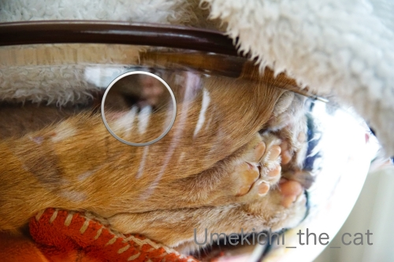
円の中の部分少し拡大してみました。
覗いているのは片目だけ、おわかりになりましたか？( ´艸｀)
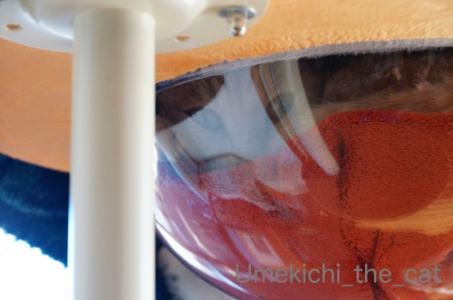
わかりやすい写真だとこんな感じです。
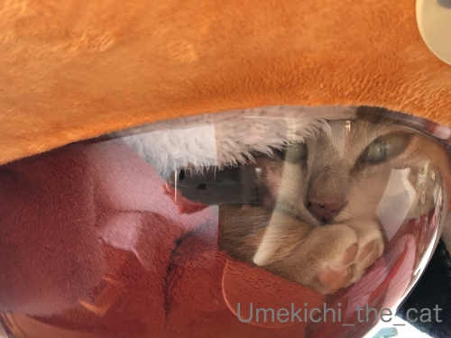
のぞいているので目つきが悪いでーす (⌒-⌒;
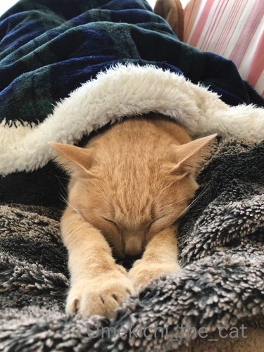
ここ数日大阪もちょっとばかり寒くなってきました。
（それでも平年よりもずっと暖かいけど）
寒い日はやっぱり下僕の上でちゅうちゅうが最高です。
お互いにぬくぬく！
********************************************************************************************************
年末温泉に招待してもらったお礼にと実家から「白い恋人」が送られてきました。
美味しくて好きなんですが自分では買わないお菓子なので素直に嬉しい！
（地元の名物ってそんなものだったりしますよね？）
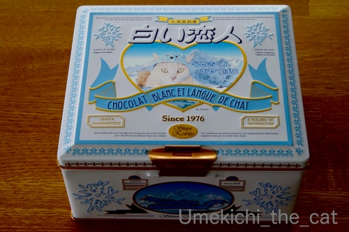
包装を解いて「あれっ？」て。
なんとー！缶に梅吉がプリントされてました。
温泉で撮った写真を送ったのですが（写真をプリントするなんて何年振りだったろう）
その中に紛れ込ませた（笑）写真を使ったようです。
母、GJ！！
石屋製菓→白い恋人 オリジナル缶
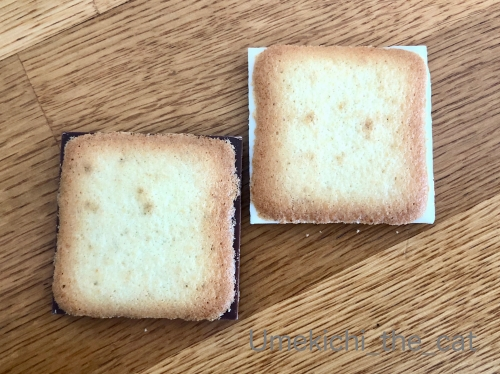
久々に食べた白い恋人。
こんなにチョコレートがはみ出してましたっけ？？？
ラングドシャクッキーが小さくなったような・・・・・
ホワイトチョコレートには否定的なんですがこれは美味しいと思う。
でもやっぱり普通のチョコレートが挟まっている方が好き。入ってる枚数少ないんだけどw
 ↑ガブッと一押し↑
↑ガブッと一押し↑
時期が過ぎる前にお花の写真を！
大阪七福神〜後編〜は次回にアップします。
先週３連休にいつもの植物園に出かけました。
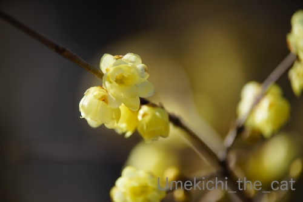
ソシンロウバイがちょうど良い感じで開花！
艶やかでみずみずしい花びら＆ほのかな良い香り＾＾
まんずさく＝マンサクとミツマタはまだ咲いていなかった（覚書）
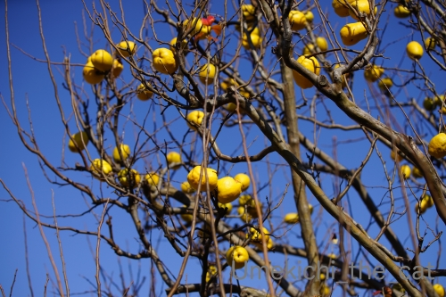
のど飴の成分でおなじみのカリン。
この果実とっても良い香りがするのですが・・・
熟しきって落下したのはちょっとくちゃかったですw
今までカリン＝マルメロだと思っていたのですが
カリンの属名「Pseudocydonia 」は「偽マルメロ」を意味するそうでカリン≠マルメロとのこと。
木の形や果実はとっても似ているんだけど葉の形が微妙に違うらしい。
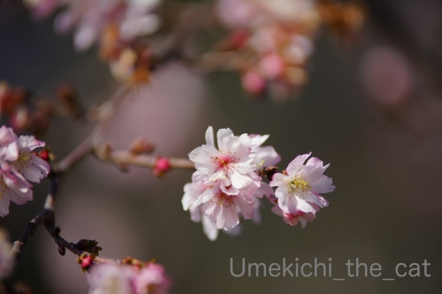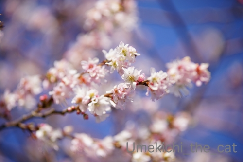
ジュウガツザクラは満開。
小さな花びらが可憐なんですよねー。
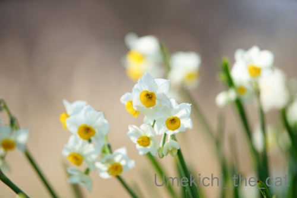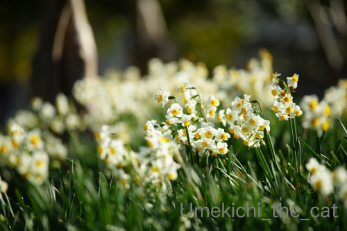
スイセン。
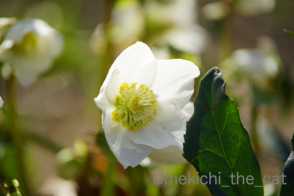
クリスマスローズは矮性で早咲きのものだけ咲いてました。
普通の背の高さのものが咲き出して見頃になるのは10日〜14日後くらいかなぁ。
うちの鉢植えのもまだ花の気配はありません。
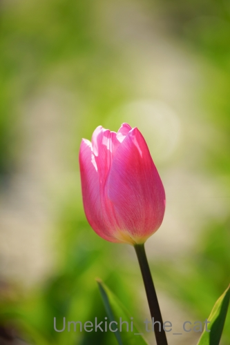
早咲きのチューリップ。
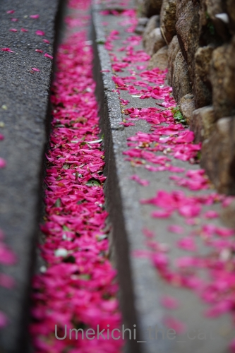
たくさんの花びら。散り方から見ると「山茶花」と思われます。
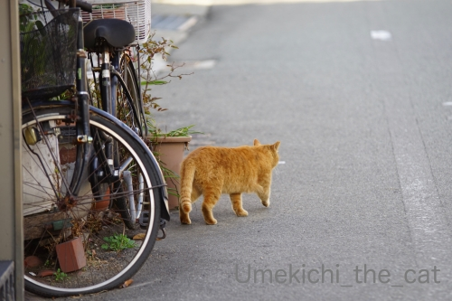
おちりしか見せてくれなかった猫さんw
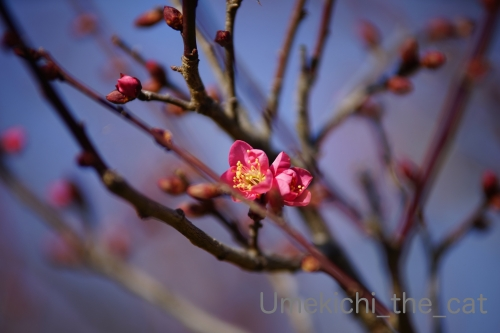
梅は数輪開いていました。
大阪は今週中頃連日17℃くらいの予想気温になっているのですが
急に暖かくなったらお花がびっくりしちゃいそうですw
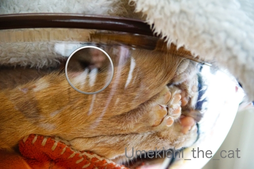
円の中の部分少し拡大してみました。
覗いているのは片目だけ、おわかりになりましたか？( ´艸｀)
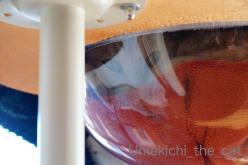
わかりやすい写真だとこんな感じです。
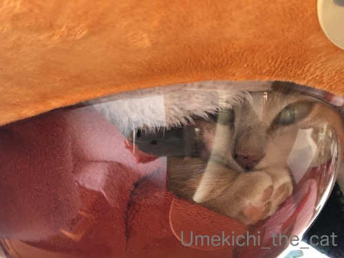
のぞいているので目つきが悪いでーす (⌒-⌒;
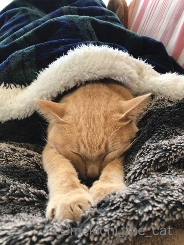
ここ数日大阪もちょっとばかり寒くなってきました。
（それでも平年よりもずっと暖かいけど）
寒い日はやっぱり下僕の上でちゅうちゅうが最高です。
お互いにぬくぬく！
********************************************************************************************************
年末温泉に招待してもらったお礼にと実家から「白い恋人」が送られてきました。
美味しくて好きなんですが自分では買わないお菓子なので素直に嬉しい！
（地元の名物ってそんなものだったりしますよね？）
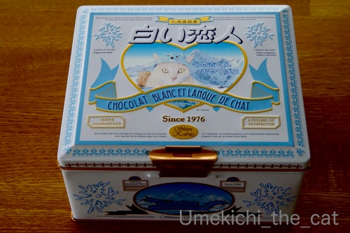
包装を解いて「あれっ？」て。
なんとー！缶に梅吉がプリントされてました。
温泉で撮った写真を送ったのですが（写真をプリントするなんて何年振りだったろう）
その中に紛れ込ませた（笑）写真を使ったようです。
母、GJ！！
石屋製菓→白い恋人 オリジナル缶
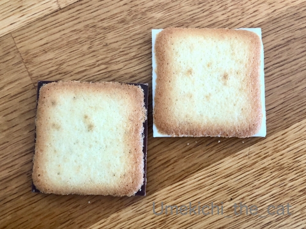
久々に食べた白い恋人。
こんなにチョコレートがはみ出してましたっけ？？？
ラングドシャクッキーが小さくなったような・・・・・
ホワイトチョコレートには否定的なんですがこれは美味しいと思う。
でもやっぱり普通のチョコレートが挟まっている方が好き。入ってる枚数少ないんだけどw
時期が過ぎる前にお花の写真を！
大阪七福神〜後編〜は次回にアップします。
先週３連休にいつもの植物園に出かけました。
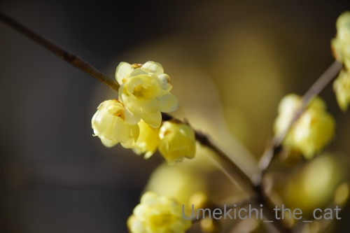
ソシンロウバイがちょうど良い感じで開花！
艶やかでみずみずしい花びら＆ほのかな良い香り＾＾
まんずさく＝マンサクとミツマタはまだ咲いていなかった（覚書）
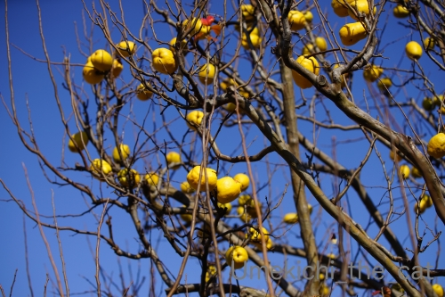
のど飴の成分でおなじみのカリン。
この果実とっても良い香りがするのですが・・・
熟しきって落下したのはちょっとくちゃかったですw
今までカリン＝マルメロだと思っていたのですが
カリンの属名「Pseudocydonia 」は「偽マルメロ」を意味するそうでカリン≠マルメロとのこと。
木の形や果実はとっても似ているんだけど葉の形が微妙に違うらしい。
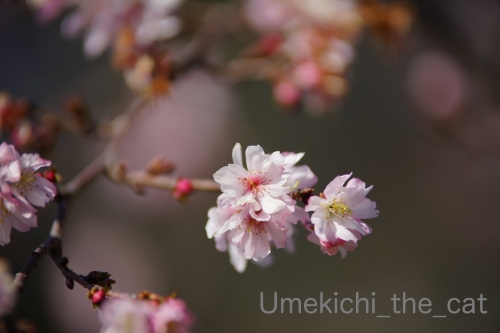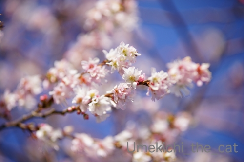
ジュウガツザクラは満開。
小さな花びらが可憐なんですよねー。
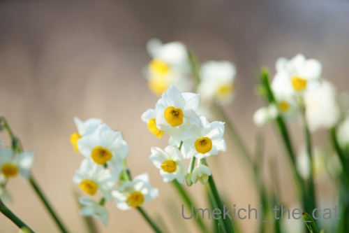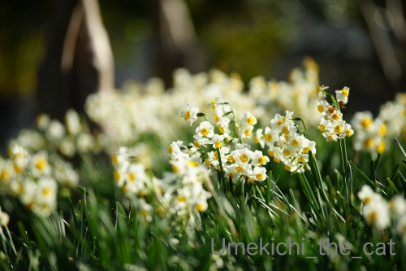
スイセン。
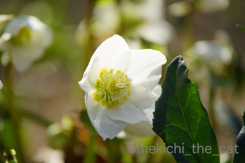
クリスマスローズは矮性で早咲きのものだけ咲いてました。
普通の背の高さのものが咲き出して見頃になるのは10日〜14日後くらいかなぁ。
うちの鉢植えのもまだ花の気配はありません。
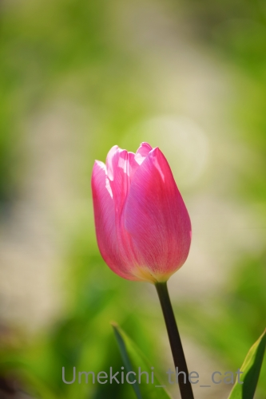
早咲きのチューリップ。
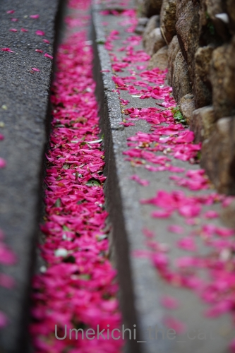
たくさんの花びら。散り方から見ると「山茶花」と思われます。
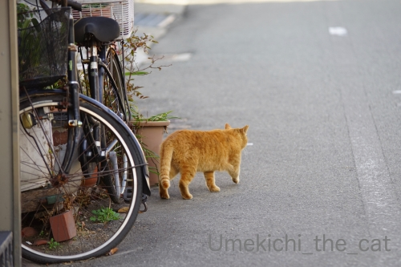
おちりしか見せてくれなかった猫さんw
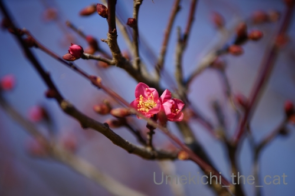
梅は数輪開いていました。
大阪は今週中頃連日17℃くらいの予想気温になっているのですが
急に暖かくなったらお花がびっくりしちゃいそうですw

カフェオレ色の梅吉

梅吉 2023年8月10日 永眠


梅吉と出会った譲渡会

犬猫の理由なき殺処分ゼロ
妄想広告
UMEKICHI 光

爆発的に早い！
時々攻撃的！
Thanks to Mr.Boss365
爆発的に早い！
時々攻撃的！
Thanks to Mr.Boss365

オリジナル缶いいですねー。ステキなプレゼント!
by zombiekong (2020-01-20 02:08)
「なに！みてるにゃあ！」梅吉さんの目がそう訴えてます^^
by ニコニコファイト (2020-01-20 06:41)
この目を見つけるのは、キジトラの見分けより難しい（爆）
by ぽちの輔 (2020-01-20 06:41)
こんなにキリリとした目で観察されると
思わず赤面してしまいそう( *´艸｀)
下僕さんの膝上で甘えっこのび～寝梅吉さん＾＾
梅吉さんも下僕さんも至福の時間ですねぇ(^O^)／
お母様、なんてNiceなプレゼント(*^▽^*)
by ニッキー (2020-01-20 06:51)
見てる見てる^m^
わかりやすい写真では、お目々と肉球にふわふわしっぽの3点セットなのがまた良いですねぇ。
でもその次ののびーーーてる写真もかわいくて好き♪ 梅吉さんらしくない気もするけど(失礼！)
オリジナル缶、良いですね～！お母様、よくそんな素晴らしいこと思いつかれましたねぇ。ついでに、変顔の梅吉さんで、面白い恋人も作って欲しいわ^m^
蝋梅、咲き始めてますよね。あーー、行きたいんだけどーーー、行く暇がーーーー。
by ChatBleu (2020-01-20 07:12)
白い恋人はチョコレート四角くてはみ出していますね！
梅吉さん、しっかり見ていますね(^^)
by ma2ma2 (2020-01-20 08:26)
オリジナル缶！！
これは素敵なサービス！
缶だったら中身なくなっても、ずっと置いとけますもんね～！
by よーちゃん (2020-01-20 09:12)
こんな隙間から覗かれている（笑
見張っている？？
オリジナル缶！これまたステキ過ぎる！
宝物になりますね(#^.^#)
by きぃ (2020-01-20 10:35)
覗いてる目は宇宙人ぽいね（ﾟ□ﾟ）
オリジナル缶いいニャ～
by 英ちゃん (2020-01-20 11:49)
白い恋人のカンカン！！
母が旅行先の写真をカンカンにしたのは見ていたけど
そうか、梅吉クンのオリジナル白い恋人！これはほしい^^
＞ホワイトチョコレートには否定的なんですがこれは美味しいと思う。
激しく同意いたします。
これは美味しいと思う^^
by リュカ (2020-01-20 12:11)
「おかーはんには見えてへんはずや・・」
クリアボウルは梅吉さんの偵察基地になってしまいましたね(≧▽≦)
いいな～いいな～♪
ウチのは全く関心を示さなくなってしまいました・・・。
オリジナル缶、これは嬉しい！！ また梅吉さんの被り物の色合いがぴったりでこのために撮った写真みたい(#^^#)
白い恋人は確かにお土産に買うかもらうか、自分用に買った記憶はありませんが、美味しいですよね^^
蝋梅綺麗です！こう暖かいと春の花が急いで咲いてしまうかもしれません。
by ゆきち (2020-01-20 12:17)
こんにちは。
出遅れましたが、じっくり読ませて頂きます（笑）
「梅吉の目」を確認出来ました。今回の写真は完全に監視状態の梅吉君！！
肉球見せながら監視は流石です。写真を急いで撮りたくなります（笑）
「白い恋人」をお土産で頂きますが、美味しいですね。
小生も地元のお土産は、自身では買わないですが・・・
梅吉君！！パッケージデビューに驚きです（笑）凄いです（爆）
面白いサービス。食べ終わったらカリカリ収納庫かな？
ソシンロウバイの開花、早いですね。
カリンの木が自宅に庭にありましたが、独特の匂い。
カリンの砂糖づけにすると普通に美味しい果物になります。
マルメロ？知らない果物？（笑）あとでググってみます。
落下した花弁風景、良い写真ですね！？(=^･ｪ･^=)
by Boss365 (2020-01-20 13:46)
覗いてる姿、宇宙猫ですかw
おちりだけのお方はまろちゃんかと思っちゃった。。
by じゅらまろ (2020-01-20 14:45)
白い恋人、オリジナル缶が素敵！！
良い情報を教えて頂き、ありがとうございます。
誰かへのプレゼントに使いたいです。
by angie17 (2020-01-20 16:45)
ふふふ 見てる見てる[壁]_・)
見られていることに萌えてしまいます(///ω///)
なんと！白い恋人にオリジナル缶があったのですね！
お母さまステキすぎーーーo(≧∇≦o)(o≧∇≦)o
元々、この缶は再利用していたのですが、これはもう
永久保存ですよね(*＾-ﾟ)v もちろん中身は食べた後ｗ
私もホワイトチョコは好きじゃないけど、これは大好き❤
もらってうれしいお土産No.1です(*´艸｀*)
by カトリーヌ (2020-01-20 17:20)
オリジナル白い恋人、嬉しいですね(^^)
梅吉さんのノビ～～が幸せを運んでくるようです！
by kou (2020-01-20 19:44)
お母様 ステキ！アイデア勝ちですね。
娘さんのちぃさんのことをよく理解している！と
感じました。
by サンダーソニア (2020-01-20 20:20)
梅吉さん、見てる見てる！
肉球としっぽまで見えている状態なので、こっちものぞき見気分？^^
オリジナル缶、素敵！
写真も合っていて、niceですね～～～^^
by sana (2020-01-20 20:41)
おおお。見つめてますね～♪
監視カメラのようですね。^^;
白い恋人のオリジナル缶、これはとてもいい記念になりますね！
ソシンロウバイ、咲くのが早すぎますっっ！！
by yes_hama (2020-01-20 21:10)
お母さん、やりますねぇ！
これは嬉しいプレゼントだねっ！！(>∀<●)ﾉ
しかも、すごい可愛い缶になってる！！
花の写真もすごく綺麗っ♪
by yuppie (2020-01-20 22:10)
梅吉さんの目は大当たりでした（笑）
自信はなかったですが、嬉しい！
白い恋人は梅吉さんというところですね（笑）
お母様GJです。
植物園、綺麗ですね。
植物園の近くのカフェで一休みしに行きます。
ジュウガツザクラ、寒い中でも健気に咲いてますね。
by kiki (2020-01-20 23:00)
クリアボールから見る梅吉さんはちょっと監視カメラみたい(笑)
何でもお見通しですよ～って感じですね。
あれ？白い恋人に猫なんてあったかなと思ったらまさかの梅吉さん！
さりげないお母さまのいいお仕事にあっぱれです♪
お写真から蠟梅のいい香りが漂ってきそう～(´▽｀)
by yamatonosuke (2020-01-21 01:09)
白い恋人は随分長い事、食べてないような。
早春の花がたくさん咲いているのですね。
森には何も花が咲いていませんでした。
咲いているところには咲いているんですね。
探しに行きたいです＾＾
by riverwalk (2020-01-21 20:52)
素敵なサプライズですね！
その間には梅吉君グッズがおさまるのでしょうか（＾＾）
by 藤並 香衣 (2020-01-22 01:09)
オリジナル缶！すごーい！いいなぁ(*´▽｀*)
本当だチョコがはみ出てる！チョコを大きくする可能性は低いのでクッキー部分が小さくなったのでしょうね・・・おお悲しや(T_T)ちなみに私は白い恋人はホワイトチョコ派なのでご不要であればいつでも引き受けますよ(≧▽≦)
by palpal (2020-01-22 08:48)
オリジナル缶、合成写真かと思ったら違うのですね！
結婚式の引き出物に使ったりするのかしら？梅吉様、
クールに決まってますね(@^▽^@)。石屋製菓の
お城みたいな工場見学してみたいけど遠くて・・。
お花の写真、どれも可愛らしいですネ。蝋梅大好き♡
by うりくま (2020-01-22 18:56)
クリアボールからの観察、鋭い目にくらっとします♡
白い恋人かんかん、こんなんあるんですね～
ネズミ帽の色がマッチしていてステキすぎるっ。
私もホワイトチョコはちょっと苦手ですが白い恋人は好きです。
大阪みやげ「面白い恋人」とはやっぱり味が違いますよねー
by liang (2020-01-23 09:02)